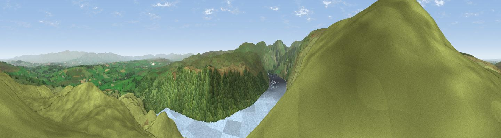

Bampton Fell
#1623 in England · top 7% of its area beats it · near BamptonWhere it is
The exact computed spot (NY 48812 16462). Click the marker for map links.
The view, rendered

A 360° render of this exact spot computed from the terrain model, tree cover and land cover — summer colours, afternoon light, calibrated against photographs of famous viewpoints. Real trees, hedges and buildings will differ in detail.
The panorama
Grey silhouette: terrain skyline in each direction (720 bearings, Earth curvature and refraction included). Dashed green: skyline with trees (+15 m) and buildings (+8 m) as obstacles. Blue strip: how far the ground is visible on each bearing.
Where the view opens
Wedge length = distance to the farthest visible ground on that bearing (vegetation-aware). Rings at 10, 25 and 50 km.
What fills the view
61% grassland · 23% woodland · 15% water ·
Angular shares of the visible panorama (visual magnitude), not map area. Landscape diversity 0.42 (0–1 Shannon).
Key numbers
More beautiful places nearby
The staircase of upgrades: each row has a higher view potential than everything closer. Driving times are estimates from straight-line distance, calibrated against real road routing — check an actual route before setting out.
| Place | Direction | Drive | Score |
|---|---|---|---|
| Viewpoint near Bampton | SW · 2 km | ~5 min | 77.8 |
| Viewpoint near Bampton | SW · 3 km | ~7 min | 80.4 |
| Viewpoint near Watermillock | NW · 5 km | ~11 min | 83.5 |
| Viewpoint near Legburthwaite | W · 15 km | ~26 min | 83.8 |
| Viewpoint near Legburthwaite | W · 16 km | ~28 min | 84.5 |
| Skiddaw South Top | WNW · 26 km | ~42 min | 85.8 |
| Viewpoint near Applethwaite | WNW · 26 km | ~42 min | 86.7 |
| Long Side | WNW · 27 km | ~43 min | 89.5 |
54.54082, -2.79269 · source: osm peak · position refined by local search. Computed location — check access rights before visiting.